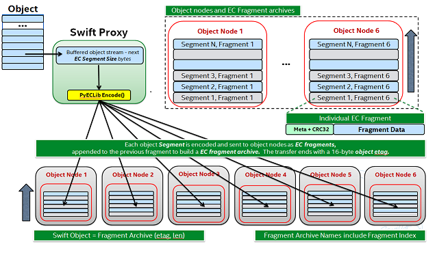

Erasure Code Support¶
History and Theory of Operation¶
There’s a lot of good material out there on Erasure Code (EC) theory, this short introduction is just meant to provide some basic context to help the reader better understand the implementation in Swift.
Erasure Coding for storage applications grew out of Coding Theory as far back as the 1960s with the Reed-Solomon codes. These codes have been used for years in applications ranging from CDs to DVDs to general communications and, yes, even in the space program starting with Voyager! The basic idea is that some amount of data is broken up into smaller pieces called fragments and coded in such a way that it can be transmitted with the ability to tolerate the loss of some number of the coded fragments. That’s where the word “erasure” comes in, if you transmit 14 fragments and only 13 are received then one of them is said to be “erased”. The word “erasure” provides an important distinction with EC; it isn’t about detecting errors, it’s about dealing with failures. Another important element of EC is that the number of erasures that can be tolerated can be adjusted to meet the needs of the application.
At a high level EC works by using a specific scheme to break up a single data buffer into several smaller data buffers then, depending on the scheme, performing some encoding operation on that data in order to generate additional information. So you end up with more data than you started with and that extra data is often called “parity”. Note that there are many, many different encoding techniques that vary both in how they organize and manipulate the data as well by what means they use to calculate parity. For example, one scheme might rely on Galois Field Arithmetic while others may work with only XOR. The number of variations and details about their differences are well beyond the scope of this introduction, but we will talk more about a few of them when we get into the implementation of EC in Swift.
Overview of EC Support in Swift¶
First and foremost, from an application perspective EC support is totally transparent. There are no EC related external API; a container is simply created using a Storage Policy defined to use EC and then interaction with the cluster is the same as any other durability policy.
EC is implemented in Swift as a Storage Policy, see Storage Policies for complete details on Storage Policies. Because support is implemented as a Storage Policy, all of the storage devices associated with your cluster’s EC capability can be isolated. It is entirely possible to share devices between storage policies, but for EC it may make more sense to not only use separate devices but possibly even entire nodes dedicated for EC.
Which direction one chooses depends on why the EC policy is being deployed. If, for example, there is a production replication policy in place already and the goal is to add a cold storage tier such that the existing nodes performing replication are impacted as little as possible, adding a new set of nodes dedicated to EC might make the most sense but also incurs the most cost. On the other hand, if EC is being added as a capability to provide additional durability for a specific set of applications and the existing infrastructure is well suited for EC (sufficient number of nodes, zones for the EC scheme that is chosen) then leveraging the existing infrastructure such that the EC ring shares nodes with the replication ring makes the most sense. These are some of the main considerations:
Layout of existing infrastructure.
Cost of adding dedicated EC nodes (or just dedicated EC devices).
Intended usage model(s).
The Swift code base does not include any of the algorithms necessary to perform the actual encoding and decoding of data; that is left to external libraries. The Storage Policies architecture is leveraged to enable EC on a per container basis – the object rings are still used to determine the placement of EC data fragments. Although there are several code paths that are unique to an operation associated with an EC policy, an external dependency to an Erasure Code library is what Swift counts on to perform the low level EC functions. The use of an external library allows for maximum flexibility as there are a significant number of options out there, each with its owns pros and cons that can vary greatly from one use case to another.
PyECLib: External Erasure Code Library¶
PyECLib is a Python Erasure Coding Library originally designed and written as part of the effort to add EC support to the Swift project, however it is an independent project. The library provides a well-defined and simple Python interface and internally implements a plug-in architecture allowing it to take advantage of many well-known C libraries such as:
Jerasure and GFComplete at http://jerasure.org.
Intel(R) ISA-L at http://01.org/intel%C2%AE-storage-acceleration-library-open-source-version.
Or write your own!
PyECLib uses a C based library called liberasurecode to implement the plug in infrastructure; liberasurecode is available at:
liberasurecode: https://github.com/openstack/liberasurecode
PyECLib itself therefore allows for not only choice but further extensibility as well. PyECLib also comes with a handy utility to help determine the best algorithm to use based on the equipment that will be used (processors and server configurations may vary in performance per algorithm). More on this will be covered in the configuration section. PyECLib is included as a Swift requirement.
For complete details see PyECLib
Storing and Retrieving Objects¶
We will discuss the details of how PUT and GET work in the “Under the Hood” section later on. The key point here is that all of the erasure code work goes on behind the scenes; this summary is a high level information overview only.
The PUT flow looks like this:
The proxy server streams in an object and buffers up “a segment” of data (size is configurable).
The proxy server calls on PyECLib to encode the data into smaller fragments.
The proxy streams the encoded fragments out to the storage nodes based on ring locations.
Repeat until the client is done sending data.
The client is notified of completion when a quorum is met.
The GET flow looks like this:
The proxy server makes simultaneous requests to participating nodes.
As soon as the proxy has the fragments it needs, it calls on PyECLib to decode the data.
The proxy streams the decoded data it has back to the client.
Repeat until the proxy is done sending data back to the client.
It may sound like, from this high level overview, that using EC is going to cause an explosion in the number of actual files stored in each node’s local file system. Although it is true that more files will be stored (because an object is broken into pieces), the implementation works to minimize this where possible, more details are available in the Under the Hood section.
Handoff Nodes¶
In EC policies, similarly to replication, handoff nodes are a set of storage nodes used to augment the list of primary nodes responsible for storing an erasure coded object. These handoff nodes are used in the event that one or more of the primaries are unavailable. Handoff nodes are still selected with an attempt to achieve maximum separation of the data being placed.
Reconstruction¶
For an EC policy, reconstruction is analogous to the process of replication for a replication type policy – essentially “the reconstructor” replaces “the replicator” for EC policy types. The basic framework of reconstruction is very similar to that of replication with a few notable exceptions:
Because EC does not actually replicate partitions, it needs to operate at a finer granularity than what is provided with rsync, therefore EC leverages much of ssync behind the scenes (you do not need to manually configure ssync).
Once a pair of nodes has determined the need to replace a missing object fragment, instead of pushing over a copy like replication would do, the reconstructor has to read in enough surviving fragments from other nodes and perform a local reconstruction before it has the correct data to push to the other node.
A reconstructor does not talk to all other reconstructors in the set of nodes responsible for an EC partition, this would be far too chatty, instead each reconstructor is responsible for sync’ing with the partition’s closest two neighbors (closest meaning left and right on the ring).
Note
EC work (encode and decode) takes place both on the proxy nodes, for PUT/GET operations, as well as on the storage nodes for reconstruction. As with replication, reconstruction can be the result of rebalancing, bit-rot, drive failure or reverting data from a hand-off node back to its primary.
Performance Considerations¶
In general, EC has different performance characteristics than replicated data. EC requires substantially more CPU to read and write data, and is more suited for larger objects that are not frequently accessed (e.g. backups).
Operators are encouraged to characterize the performance of various EC schemes and share their observations with the developer community.
Using an Erasure Code Policy¶
To use an EC policy, the administrator simply needs to define an EC policy in swift.conf and create/configure the associated object ring. An example of how an EC policy can be setup is shown below:
[storage-policy:2]
name = ec104
policy_type = erasure_coding
ec_type = liberasurecode_rs_vand
ec_num_data_fragments = 10
ec_num_parity_fragments = 4
ec_object_segment_size = 1048576
Let’s take a closer look at each configuration parameter:
name: This is a standard storage policy parameter. See Storage Policies for details.policy_type: Set this toerasure_codingto indicate that this is an EC policy.ec_type: Set this value according to the available options in the selected PyECLib back-end. This specifies the EC scheme that is to be used. For example the option shown here selects Vandermonde Reed-Solomon encoding while an option offlat_xor_hd_3would select Flat-XOR based HD combination codes. See the PyECLib page for full details.ec_num_data_fragments: The total number of fragments that will be comprised of data.ec_num_parity_fragments: The total number of fragments that will be comprised of parity.ec_object_segment_size: The amount of data that will be buffered up before feeding a segment into the encoder/decoder. The default value is 1048576.
When PyECLib encodes an object, it will break it into N fragments. However, what is important during configuration, is how many of those are data and how many are parity. So in the example above, PyECLib will actually break an object in 14 different fragments, 10 of them will be made up of actual object data and 4 of them will be made of parity data (calculations depending on ec_type).
When deciding which devices to use in the EC policy’s object ring, be sure to carefully consider the performance impacts. Running some performance benchmarking in a test environment for your configuration is highly recommended before deployment.
To create the EC policy’s object ring, the only difference in the usage of the
swift-ring-builder create command is the replicas parameter. The
replicas value is the number of fragments spread across the object servers
associated with the ring; replicas must be equal to the sum of
ec_num_data_fragments and ec_num_parity_fragments. For example:
swift-ring-builder object-1.builder create 10 14 1
Note that in this example the replicas value of 14 is based on the sum of
10 EC data fragments and 4 EC parity fragments.
Once you have configured your EC policy in swift.conf and created your object ring, your application is ready to start using EC simply by creating a container with the specified policy name and interacting as usual.
Note
It’s important to note that once you have deployed a policy and have created objects with that policy, these configurations options cannot be changed. In case a change in the configuration is desired, you must create a new policy and migrate the data to a new container.
Warning
Using isa_l_rs_vand with more than 4 parity fragments creates fragments
which may in some circumstances fail to reconstruct properly or (with
liberasurecode < 1.3.1) reconstruct corrupted data. New policies that need
large numbers of parity fragments should consider using isa_l_rs_cauchy.
Any existing affected policies must be marked deprecated, and data in
containers with that policy should be migrated to a new policy.
Migrating Between Policies¶
A common usage of EC is to migrate less commonly accessed data from a more expensive but lower latency policy such as replication. When an application determines that it wants to move data from a replication policy to an EC policy, it simply needs to move the data from the replicated container to an EC container that was created with the target durability policy.
Global EC¶
The following recommendations are made when deploying an EC policy that spans multiple regions in a Global Cluster:
The global EC policy should use EC Duplication in conjunction with a Composite Ring, as described below.
Proxy servers should be configured to use read affinity to prefer reading from their local region for the global EC policy. Per policy configuration allows this to be configured for individual policies.
Note
Before deploying a Global EC policy, consideration should be given to the Known Issues, in particular the relatively poor performance anticipated from the object-reconstructor.
EC Duplication¶
EC Duplication enables Swift to make duplicated copies of fragments of erasure
coded objects. If an EC storage policy is configured with a non-default
ec_duplication_factor of N > 1, then the policy will create N
duplicates of each unique fragment that is returned from the configured EC
engine.
Duplication of EC fragments is optimal for Global EC storage policies, which
require dispersion of fragment data across failure domains. Without fragment
duplication, common EC parameters will not distribute enough unique fragments
between large failure domains to allow for a rebuild using fragments from any
one domain. For example a uniformly distributed 10+4 EC policy schema
would place 7 fragments in each of two failure domains, which is less in each
failure domain than the 10 fragments needed to rebuild a missing fragment.
Without fragment duplication, an EC policy schema must be adjusted to include
additional parity fragments in order to guarantee the number of fragments in
each failure domain is greater than the number required to rebuild. For
example, a uniformly distributed 10+18 EC policy schema would place 14
fragments in each of two failure domains, which is more than sufficient in each
failure domain to rebuild a missing fragment. However, empirical testing has
shown encoding a schema with num_parity > num_data (such as 10+18) is
less efficient than using duplication of fragments. EC fragment duplication
enables Swift’s Global EC to maintain more independence between failure domains
without sacrificing efficiency on read/write or rebuild!
The ec_duplication_factor option may be configured in swift.conf in each
storage-policy section. The option may be omitted - the default value is
1 (i.e. no duplication):
[storage-policy:2]
name = ec104
policy_type = erasure_coding
ec_type = liberasurecode_rs_vand
ec_num_data_fragments = 10
ec_num_parity_fragments = 4
ec_object_segment_size = 1048576
ec_duplication_factor = 2
Warning
EC duplication is intended for use with Global EC policies. To ensure
independent availability of data in all regions, the
ec_duplication_factor option should only be used in conjunction with
Composite Rings, as described in this document.
In this example, a 10+4 schema and a duplication factor of 2 will
result in (10+4)x2 = 28 fragments being stored (we will use the shorthand
10+4x2 to denote that policy configuration) . The ring for this policy
should be configured with 28 replicas (i.e. (ec_num_data_fragments +
ec_num_parity_fragments) * ec_duplication_factor). A 10+4x2 schema
can allow a multi-region deployment to rebuild an object to full durability
even when more than 14 fragments are unavailable. This is advantageous with
respect to a 10+18 configuration not only because reads from data fragments
will be more common and more efficient, but also because a 10+4x2 can grow
into a 10+4x3 to expand into another region.
EC duplication with composite rings¶
It is recommended that EC Duplication is used with Composite Rings in order to disperse duplicate fragments across regions.
When EC duplication is used, it is highly desirable to have one duplicate of
each fragment placed in each region. This ensures that a set of
ec_num_data_fragments unique fragments (the minimum needed to reconstruct
an object) can always be assembled from a single region. This in turn means
that objects are robust in the event of an entire region becoming unavailable.
This can be achieved by using a composite ring with the following properties:
The number of component rings in the composite ring is equal to the
ec_duplication_factorfor the policy.Each component ring has a number of
replicasthat is equal to the sum ofec_num_data_fragmentsandec_num_parity_fragments.Each component ring is populated with devices in a unique region.
This arrangement results in each component ring in the composite ring, and therefore each region, having one copy of each fragment.
For example, consider a Swift cluster with two regions, region1 and
region2 and a 4+2x2 EC policy schema. This policy should use a
composite ring with two component rings, ring1 and ring2, having
devices exclusively in regions region1 and region2 respectively. Each
component ring should have replicas = 6. As a result, the first 6
fragments for an object will always be placed in ring1 (i.e. in
region1) and the second 6 duplicate fragments will always be placed in
ring2 (i.e. in region2).
Conversely, a conventional ring spanning the two regions may give a suboptimal
distribution of duplicates across the regions; it is possible for duplicates of
the same fragment to be placed in the same region, and consequently for another
region to have no copies of that fragment. This may make it impossible to
assemble a set of ec_num_data_fragments unique fragments from a single
region. For example, the conventional ring could have a pathologically
sub-optimal placement such as:
r1
<timestamp>#0#d.data
<timestamp>#0#d.data
<timestamp>#2#d.data
<timestamp>#2#d.data
<timestamp>#4#d.data
<timestamp>#4#d.data
r2
<timestamp>#1#d.data
<timestamp>#1#d.data
<timestamp>#3#d.data
<timestamp>#3#d.data
<timestamp>#5#d.data
<timestamp>#5#d.data
In this case, the object cannot be reconstructed from a single region;
region1 has only the fragments with index 0, 2, 4 and region2 has
the other 3 indexes, but we need 4 unique indexes to be able to rebuild an
object.
Node Selection Strategy for Reads¶
Proxy servers require a set of unique fragment indexes to decode the original object when handling a GET request to an EC policy. With a conventional EC policy, this is very likely to be the outcome of reading fragments from a random selection of backend nodes. With an EC Duplication policy it is significantly more likely that responses from a random selection of backend nodes might include some duplicated fragments.
For this reason it is strongly recommended that EC Duplication always be deployed in combination with Composite Rings and proxy server read affinity.
Under normal conditions with the recommended deployment, read affinity will cause a proxy server to first attempt to read fragments from nodes in its local region. These fragments are guaranteed to be unique with respect to each other. Even if there are a small number of local failures, unique local parity fragments will make up the difference. However, should enough local primary storage nodes fail, such that sufficient unique fragments are not available in the local region, a global EC cluster will proceed to read fragments from the other region(s). Random reads from the remote region are not guaranteed to return unique fragments; with EC Duplication there is a significantly high probability that the proxy server will encounter a fragment that is a duplicate of one it has already found in the local region. The proxy server will ignore these and make additional requests until it accumulates the required set of unique fragments, potentially searching all the primary and handoff locations in the local and remote regions before ultimately failing the read.
A global EC deployment configured as recommended is therefore extremely resilient. However, under extreme failure conditions read handling can be inefficient because nodes in other regions are guaranteed to have some fragments which are duplicates of those the proxy server has already received. Work is in progress to improve the proxy server node selection strategy such that when it is necessary to read from other regions, nodes that are likely to have useful fragments are preferred over those that are likely to return a duplicate.
Known Issues¶
Efficient Cross Region Rebuild¶
Work is also in progress to improve the object-reconstructor efficiency for Global EC policies. Unlike the proxy server, the reconstructor does not apply any read affinity settings when gathering fragments. It is therefore likely to receive duplicated fragments (i.e. make wasted backend GET requests) while performing every fragment reconstruction.
Additionally, other reconstructor optimisations for Global EC are under investigation:
Since fragments are duplicated between regions it may in some cases be more attractive to restore failed fragments from their duplicates in another region instead of rebuilding them from other fragments in the local region.
Conversely, to avoid WAN transfer it may be more attractive to rebuild fragments from local parity.
During rebalance it will always be more attractive to revert a fragment from it’s old-primary to it’s new primary rather than rebuilding or transferring a duplicate from the remote region.
Under the Hood¶
Now that we’ve explained a little about EC support in Swift and how to configure and use it, let’s explore how EC fits in at the nuts-n-bolts level.
Terminology¶
The term ‘fragment’ has been used already to describe the output of the EC process (a series of fragments) however we need to define some other key terms here before going any deeper. Without paying special attention to using the correct terms consistently, it is very easy to get confused in a hurry!
chunk: HTTP chunks received over wire (term not used to describe any EC specific operation).
segment: Not to be confused with SLO/DLO use of the word, in EC we call a segment a series of consecutive HTTP chunks buffered up before performing an EC operation.
fragment: Data and parity ‘fragments’ are generated when erasure coding transformation is applied to a segment.
EC archive: A concatenation of EC fragments; to a storage node this looks like an object.
ec_ndata: Number of EC data fragments.
ec_nparity: Number of EC parity fragments.
Middleware¶
Middleware remains unchanged. For most middleware (e.g., SLO/DLO) the fact that the proxy is fragmenting incoming objects is transparent. For list endpoints, however, it is a bit different. A caller of list endpoints will get back the locations of all of the fragments. The caller will be unable to re-assemble the original object with this information, however the node locations may still prove to be useful information for some applications.
On Disk Storage¶
EC archives are stored on disk in their respective objects-N directory based on their policy index. See Storage Policies for details on per policy directory information.
In addition to the object timestamp, the filenames of EC archives encode other information related to the archive:
The fragment archive index. This is required for a few reasons. For one, it allows us to store fragment archives of different indexes on the same storage node which is not typical however it is possible in many circumstances. Without unique filenames for the different EC archive files in a set, we would be at risk of overwriting one archive of index n with another of index m in some scenarios.
The index is appended to the filename just before the
.dataextension. For example, the filename for a fragment archive storing the 5th fragment would be:1418673556.92690#5.data
The durable state of the archive. The meaning of this will be described in more detail later, but a fragment archive that is considered durable has an additional
#dstring included in its filename immediately before the.dataextension. For example:1418673556.92690#5#d.data
A policy-specific transformation function is therefore used to build the
archive filename. These functions are implemented in the diskfile module as
methods of policy specific sub classes of BaseDiskFileManager.
The transformation function for the replication policy is simply a NOP.
Note
In older versions the durable state of an archive was represented by an
additional file called the .durable file instead of the #d
substring in the .data filename. The .durable for the example above
would be:
1418673556.92690.durable
Proxy Server¶
High Level¶
The Proxy Server handles Erasure Coding in a different manner than replication, therefore there are several code paths unique to EC policies either though sub classing or simple conditionals. Taking a closer look at the PUT and the GET paths will help make this clearer. But first, a high level overview of how an object flows through the system:
Note how:
Incoming objects are buffered into segments at the proxy.
Segments are erasure coded into fragments at the proxy.
The proxy stripes fragments across participating nodes such that the on-disk stored files that we call a fragment archive is appended with each new fragment.
This scheme makes it possible to minimize the number of on-disk files given our segmenting and fragmenting.
Multi_Phase Conversation¶
Multi-part MIME document support is used to allow the proxy to engage in a handshake conversation with the storage node for processing PUT requests. This is required for a few different reasons.
From the perspective of the storage node, a fragment archive is really just another object, we need a mechanism to send down the original object etag after all fragment archives have landed.
Without introducing strong consistency semantics, the proxy needs a mechanism to know when a quorum of fragment archives have actually made it to disk before it can inform the client of a successful PUT.
MIME supports a conversation between the proxy and the storage nodes for every PUT. This provides us with the ability to handle a PUT in one connection and assure that we have the essence of a 2 phase commit, basically having the proxy communicate back to the storage nodes once it has confirmation that a quorum of fragment archives in the set have been written.
For the first phase of the conversation the proxy requires a quorum of ec_ndata + 1 fragment archives to be successfully put to storage nodes. This ensures that the object could still be reconstructed even if one of the fragment archives becomes unavailable. As described above, each fragment archive file is named:
<ts>#<frag_index>.data
where ts is the timestamp and frag_index is the fragment archive index.
During the second phase of the conversation the proxy communicates a
confirmation to storage nodes that the fragment archive quorum has been
achieved. This causes each storage node to rename the fragment archive written
in the first phase of the conversation to include the substring #d in its
name:
<ts>#<frag_index>#d.data
This indicates to the object server that this fragment archive is durable and
that there is a set of data files that are durable at timestamp ts.
For the second phase of the conversation the proxy requires a quorum of ec_ndata + 1 successful commits on storage nodes. This ensures that there are sufficient committed fragment archives for the object to be reconstructed even if one becomes unavailable. The reconstructor ensures that the durable state is replicated on storage nodes where it may be missing.
Note that the completion of the commit phase of the conversation is also a signal for the object server to go ahead and immediately delete older timestamp files for this object. This is critical as we do not want to delete the older object until the storage node has confirmation from the proxy, via the multi-phase conversation, that the other nodes have landed enough for a quorum.
The basic flow looks like this:
The Proxy Server erasure codes and streams the object fragments (ec_ndata + ec_nparity) to the storage nodes.
The storage nodes store objects as EC archives and upon finishing object data/metadata write, send a 1st-phase response to proxy.
Upon quorum of storage nodes responses, the proxy initiates 2nd-phase by sending commit confirmations to object servers.
Upon receipt of commit message, object servers rename
.datafiles to include the#dsubstring, indicating successful PUT, and send a final response to the proxy server.The proxy waits for ec_ndata + 1 object servers to respond with a success (2xx) status before responding to the client with a successful status.
Here is a high level example of what the conversation looks like:
proxy: PUT /p/a/c/o
Transfer-Encoding': 'chunked'
Expect': '100-continue'
X-Backend-Obj-Multiphase-Commit: yes
obj: 100 Continue
X-Obj-Multiphase-Commit: yes
proxy: --MIMEboundary
X-Document: object body
<obj_data>
--MIMEboundary
X-Document: object metadata
Content-MD5: <footer_meta_cksum>
<footer_meta>
--MIMEboundary
<object server writes data, metadata to <ts>#<frag_index>.data file>
obj: 100 Continue
<quorum>
proxy: X-Document: put commit
commit_confirmation
--MIMEboundary--
<object server renames <ts>#<frag_index>.data to <ts>#<frag_index>#d.data>
obj: 20x
<proxy waits to receive >=2 2xx responses>
proxy: 2xx -> client
A few key points on the durable state of a fragment archive:
A durable fragment archive means that there exist sufficient other fragment archives elsewhere in the cluster (durable and/or non-durable) to reconstruct the object.
When a proxy does a GET, it will require at least one object server to respond with a fragment archive is durable before reconstructing and returning the object to the client.
Partial PUT Failures¶
A partial PUT failure has a few different modes. In one scenario the Proxy Server is alive through the entire PUT conversation. This is a very straightforward case. The client will receive a good response if and only if a quorum of fragment archives were successfully landed on their storage nodes. In this case the Reconstructor will discover the missing fragment archives, perform a reconstruction and deliver those fragment archives to their nodes.
The more interesting case is what happens if the proxy dies in the middle of a conversation. If it turns out that a quorum had been met and the commit phase of the conversation finished, its as simple as the previous case in that the reconstructor will repair things. However, if the commit didn’t get a chance to happen then some number of the storage nodes have .data files on them (fragment archives) but none of them knows whether there are enough elsewhere for the entire object to be reconstructed. In this case the client will not have received a 2xx response so there is no issue there, however, it is left to the storage nodes to clean up the stale fragment archives. Work is ongoing in this area to enable the proxy to play a role in reviving these fragment archives, however, for the current release, a proxy failure after the start of a conversation but before the commit message will simply result in a PUT failure.
GET¶
The GET for EC is different enough from replication that subclassing the BaseObjectController to the ECObjectController enables an efficient way to implement the high level steps described earlier:
The proxy server makes simultaneous requests to ec_ndata primary object server nodes with goal of finding a set of ec_ndata distinct EC archives at the same timestamp, and an indication from at least one object server that a durable fragment archive exists for that timestamp. If this goal is not achieved with the first ec_ndata requests then the proxy server continues to issue requests to the remaining primary nodes and then handoff nodes.
As soon as the proxy server has found a usable set of ec_ndata EC archives, it starts to call PyECLib to decode fragments as they are returned by the object server nodes.
The proxy server creates Etag and content length headers for the client response since each EC archive’s metadata is valid only for that archive.
The proxy streams the decoded data it has back to the client.
Note that the proxy does not require all objects servers to have a durable fragment archive to return in response to a GET. The proxy will be satisfied if just one object server has a durable fragment archive at the same timestamp as EC archives returned from other object servers. This means that the proxy can successfully GET an object that had missing durable state on some nodes when it was PUT (i.e. a partial PUT failure occurred).
Note also that an object server may inform the proxy server that it has more than one EC archive for different timestamps and/or fragment indexes, which may cause the proxy server to issue multiple requests for distinct EC archives to that object server. (This situation can temporarily occur after a ring rebalance when a handoff node storing an archive has become a primary node and received its primary archive but not yet moved the handoff archive to its primary node.)
The proxy may receive EC archives having different timestamps, and may receive several EC archives having the same index. The proxy therefore ensures that it has sufficient EC archives with the same timestamp and distinct fragment indexes before considering a GET to be successful.
Object Server¶
The Object Server, like the Proxy Server, supports MIME conversations as described in the proxy section earlier. This includes processing of the commit message and decoding various sections of the MIME document to extract the footer which includes things like the entire object etag.
DiskFile¶
Erasure code policies use subclassed ECDiskFile, ECDiskFileWriter,
ECDiskFileReader and ECDiskFileManager to implement EC specific
handling of on disk files. This includes things like file name manipulation to
include the fragment index and durable state in the filename, construction of
EC specific hashes.pkl file to include fragment index information, etc.
Metadata¶
There are few different categories of metadata that are associated with EC:
System Metadata: EC has a set of object level system metadata that it attaches to each of the EC archives. The metadata is for internal use only:
X-Object-Sysmeta-EC-Etag: The Etag of the original object.X-Object-Sysmeta-EC-Content-Length: The content length of the original object.X-Object-Sysmeta-EC-Frag-Index: The fragment index for the object.X-Object-Sysmeta-EC-Scheme: Description of the EC policy used to encode the object.X-Object-Sysmeta-EC-Segment-Size: The segment size used for the object.
User Metadata: User metadata is unaffected by EC, however, a full copy of the user metadata is stored with every EC archive. This is required as the reconstructor needs this information and each reconstructor only communicates with its closest neighbors on the ring.
PyECLib Metadata: PyECLib stores a small amount of metadata on a per fragment basis. This metadata is not documented here as it is opaque to Swift.
Database Updates¶
As account and container rings are not associated with a Storage Policy, there is no change to how these database updates occur when using an EC policy.
The Reconstructor¶
The Reconstructor performs analogous functions to the replicator:
Recovering from disk drive failure.
Moving data around because of a rebalance.
Reverting data back to a primary from a handoff.
Recovering fragment archives from bit rot discovered by the auditor.
However, under the hood it operates quite differently. The following are some of the key elements in understanding how the reconstructor operates.
Unlike the replicator, the work that the reconstructor does is not always as easy to break down into the 2 basic tasks of synchronize or revert (move data from handoff back to primary) because of the fact that one storage node can house fragment archives of various indexes and each index really "belongs" to a different node. So, whereas when the replicator is reverting data from a handoff it has just one node to send its data to, the reconstructor can have several. Additionally, it is not always the case that the processing of a particular suffix directory means one or the other job type for the entire directory (as it does for replication). The scenarios that create these mixed situations can be pretty complex so we will just focus on what the reconstructor does here and not a detailed explanation of why.
Job Construction and Processing¶
Because of the nature of the work it has to do as described above, the reconstructor builds jobs for a single job processor. The job itself contains all of the information needed for the processor to execute the job which may be a synchronization or a data reversion. There may be a mix of jobs that perform both of these operations on the same suffix directory.
Jobs are constructed on a per-partition basis and then per-fragment-index basis. That is, there will be one job for every fragment index in a partition. Performing this construction "up front" like this helps minimize the interaction between nodes collecting hashes.pkl information.
Once a set of jobs for a partition has been constructed, those jobs are sent off to threads for execution. The single job processor then performs the necessary actions, working closely with ssync to carry out its instructions. For data reversion, the actual objects themselves are cleaned up via the ssync module and once that partition’s set of jobs is complete, the reconstructor will attempt to remove the relevant directory structures.
Job construction must account for a variety of scenarios, including:
A partition directory with all fragment indexes matching the local node index. This is the case where everything is where it belongs and we just need to compare hashes and sync if needed. Here we simply sync with our partners.
A partition directory with at least one local fragment index and mix of others. Here we need to sync with our partners where fragment indexes matches the local_id, all others are sync’d with their home nodes and then deleted.
A partition directory with no local fragment index and just one or more of others. Here we sync with just the home nodes for the fragment indexes that we have and then all the local archives are deleted. This is the basic handoff reversion case.
Note
A "home node" is the node where the fragment index encoded in the fragment archive’s filename matches the node index of a node in the primary partition list.
Node Communication¶
The replicators talk to all nodes who have a copy of their object, typically just 2 other nodes. For EC, having each reconstructor node talk to all nodes would incur a large amount of overhead as there will typically be a much larger number of nodes participating in the EC scheme. Therefore, the reconstructor is built to talk to its adjacent nodes on the ring only. These nodes are typically referred to as partners.
Reconstruction¶
Reconstruction can be thought of sort of like replication but with an extra step in the middle. The reconstructor is hard-wired to use ssync to determine what is missing and desired by the other side. However, before an object is sent over the wire it needs to be reconstructed from the remaining fragments as the local fragment is just that - a different fragment index than what the other end is asking for.
Thus, there are hooks in ssync for EC based policies. One case would be for basic reconstruction which, at a high level, looks like this:
Determine which nodes need to be contacted to collect other EC archives needed to perform reconstruction.
Update the etag and fragment index metadata elements of the newly constructed fragment archive.
Establish a connection to the target nodes and give ssync a DiskFileLike class from which it can stream data.
The reader in this class gathers fragments from the nodes and uses PyECLib to
reconstruct each segment before yielding data back to ssync. Essentially what
this means is that data is buffered, in memory, on a per segment basis at the
node performing reconstruction and each segment is dynamically reconstructed and
delivered to ssync_sender where the send_put() method will ship them on
over. The sender is then responsible for deleting the objects as they are sent
in the case of data reversion.
The Auditor¶
Because the auditor already operates on a per storage policy basis, there are no specific auditor changes associated with EC. Each EC archive looks like, and is treated like, a regular object from the perspective of the auditor. Therefore, if the auditor finds bit-rot in an EC archive, it simply quarantines it and the reconstructor will take care of the rest just as the replicator does for replication policies.